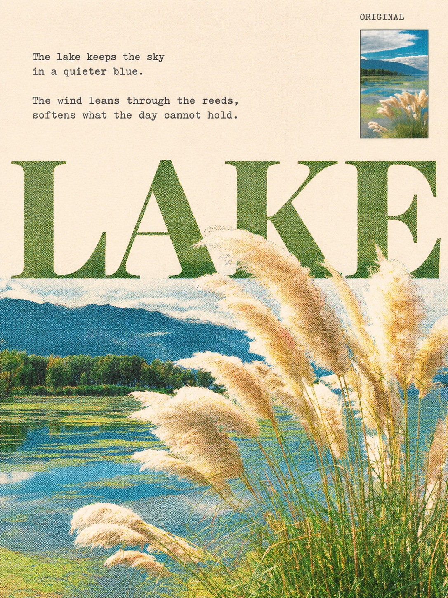
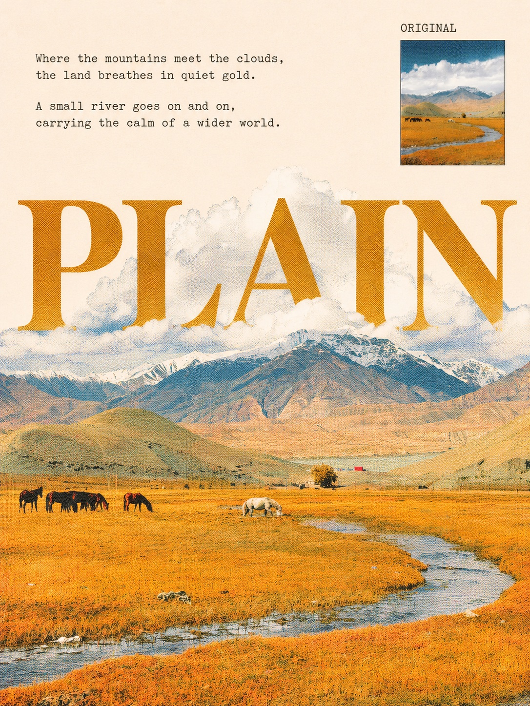

Threads｜照片轉詩意復古印刷海報：英文大字與彩色網點 Prompt
照片轉詩意復古印刷海報：英文大字與彩色網點 Prompt

一句話摘要
Threads 作者 michelle 分享一段中文提示詞，讓影像模型以照片為基礎製作 3:4 直式海報：暖白留白、小詩、巨型英文襯線字、照片主體穿字、彩色印刷網點及原圖縮圖。這是作者分享的設計意圖，不保證每次都能達成。
完整提示詞原文
以下逐字保留作者本人續文的簡體中文；「閱讀全文」為介面文字，並非提示詞。
请将我上传的照片制作成一张 3:4 竖版诗意复古印刷海报。先观察照片，选择最有辨识度、适合向上延伸的主体，保留原照片的关键场景、视角、姿态和主体关系，不随意增添物体。上方约三分之一为干净的暖白纸色留白，放置两段与照片情绪呼应的简短英文诗句，使用克制的小号打字机字体。中部根据照片主题，自选一个简短英文单词，以横跨画面的巨大高对比衬线大写字呈现。让真实摄影主体从下方原场景自然向上延伸，穿过大字、遮挡部分笔画，并明显越过字顶进入暖白留白。主体必须与原场景保持连接、比例正常；优先调整文字位置和取景，不要拉长头颈、扭曲身体或制造漂浮物。遮挡适量，保持单词清晰可读。整张海报应是连续画面。利用主体轮廓、光线、背景色与网点疏密，让照片在字间及主体周围自然衔接留白，避免上下矩形拼接、笔直横切边、抠图白边和生硬渐变。大字颜色从照片的花瓣、果实、枝叶、墙面、羽毛或水色中提取，与画面主色协调且保持可读对比，不固定使用蓝色。小诗和细节标记采用同色系深色。依据原图强化适合的光色情绪，同时保留照片辨识度。在大字与风格化照片内部加入细密、清晰可见的圆形彩色印刷网点，青、洋红、黄等墨点可轻微错位，暗密亮疏。整体像复古杂志的彩色半调印刷，而非普通噪点或划痕；主体仍保持真实摄影材质，上方暖白相对干净。右上角放一张宽约占画面 15%–18% 的原始照片缩略图，完整展示原图、保持比例、不裁切、不调色，配细边框及准确的“ORIGINAL”标注，避开诗句与主体。整体克制、诗意，英文准确，无额外标题、新增水印或无关装饰。只输出一张完整海报，不要拼图或样机。
使用與注意
- 將有權使用的照片與上述提示詞一起提供給支援圖片輸入和生成的工具，先用風景、植物或非敏感照片嘗試；依工具實際介面與條款操作。
- 可另行指定英文主標或詩句；生成後核對拼字、原圖縮圖和構圖。如需精準排字及真正未變動的原圖縮圖，建議在設計軟體後製。
- 即使提示詞要求保留場景與身體比例，模型仍可能改變人物、場景或物件，不能保證照片真實性。本文未實際測試生成效果。
- 上傳人像前取得當事人同意，留意雲端服務資料處理、保存及分享設定；不要上傳不願外流的照片。公開生成圖前也應確認肖像與素材使用權。
圖片與來源驗證
原貼文渲染頁顯示六張輪播海報；逐張下載並檢視，依序為女性人像、抱花人物、人物與鵝、湖泊蘆葦、山川草原、海邊人像。本文保存兩張無明顯人像的風景圖作示例；其餘四張涉及人物或疑似人物，未公開鏡像，肖像與再利用授權均未獨立確認。這些是社群 CDN 公開壓縮版本，非已確認的原始檔；他人回圖及推薦串文不屬原輪播，未納入。原帖公開可見不代表第三方再利用自動獲授權。

已檢查既有日式觀光海報提示詞文章：其為不同作者和不同提示詞，與本篇相關但非重複。資料擷取時間及圖片尺寸、雜湊記錄於來源封存；原帖畫面是示例，非本次測試。